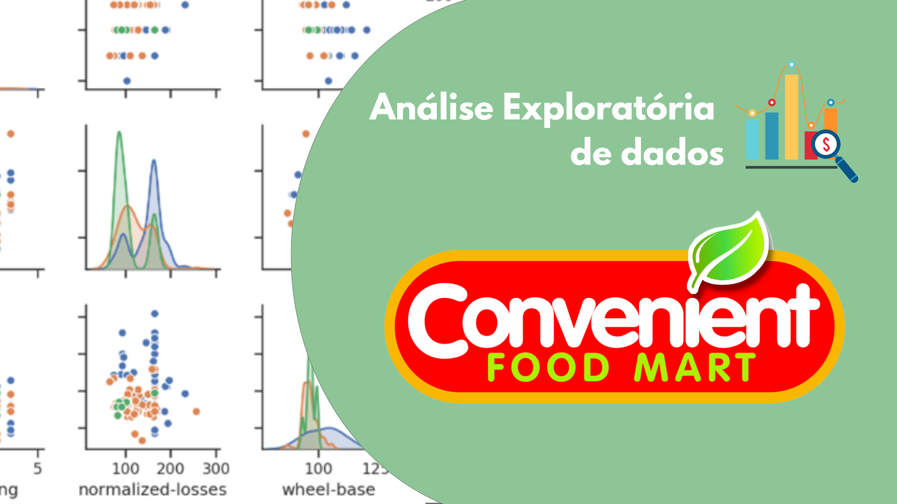

Portfólio
Sobre mim
Engenheiro com experiência em inteligência de negócios, automação de processos e análise de dados. Especialista em Python, SQL, Power BI e RPA, aplicando essas ferramentas para estruturar dados, criar relatórios estratégicos e apoiar decisões.
No Growth, analisei mercado e concorrência para embasar decisões estratégicas, resultando em um novo modelo de negócio, no lançamento da primeira unidade física em quatro semanas e na captação de US$ 8 milhões. Desenvolvi análises para vendas, aprimorando conversão e segmentação. Na engenharia, implementei automações que reduziram o tempo de geração de relatórios em 40%, melhorando a eficiência operacional.
Atualmente, curso um MBA em Data Science (USP/Esalq), aprofundando conhecimentos em machine learning, big data e inteligência artificial. Meu objetivo é transformar dados em insights estratégicos e soluções preditivas, impulsionando a inovação e a eficiência nas empresas.
Habilidades Técnicas
- Linguagens: Python, SQL, VBA e DAX
- Ferramentas: Power BI, Tableau e Excel.
Projetos de Análise de Dados
Análise Exploratória de Dados: Convenient Food Mart
Contexto: Este projeto teve como foco a construção de um pipeline de dados para análise de vendas de uma loja online fictícia, utilizando a FakeStoreAPI. Ele abrange todas as etapas de um processo ETL (Extração, Transformação e Carregamento), além do desenvolvimento de dashboards no Power BI para visualização dos dados.
Objetivos:
- Implementar um pipeline ETL utilizando Python em conjunto com Docker, Airflow e PostgreSQL.
- Extrair e transformar dados da FakeStoreAPI, organizando informações sobre produtos, carrinhos e usuários.
- Realizar análises descritivas e diagnósticas para identificar padrões de vendas.
- Disponibilizar os dados transformados para visualização no Power BI.
Resultados:
- Identificamos que as categorias “men’s clothing” e “electronics” lideram em volume de vendas.
- Correlação positiva entre avaliações e volume de vendas, indicando impacto do feedback dos clientes.
- Analisamos produtos com avaliações baixas para identificar oportunidades de melhoria.
Ferramentas: Airflow, Docker, Git, PostgreSQL, Power BI, Python, SQL, Visual Studio Code.